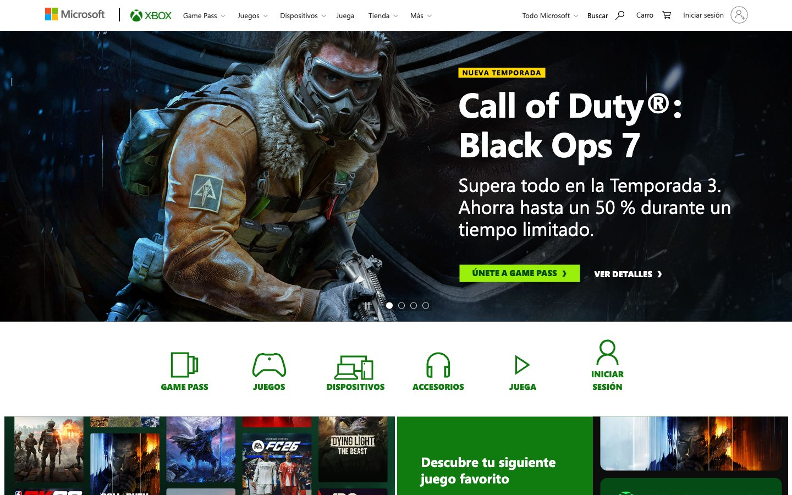

Xbox.com 的 Design.md 主题展示，围绕游戏娱乐、媒体内容、趣味互动、浅色界面组织页面。
Explore Xbox.com's light Media design system: Lumi Green #107c10, Rich Meadow #054b16 colors, Segoe UI, SegoeProBlack typography, and DESIGN.md for AI agents.

#107c10: #107c10#054b16: #054b16#9bf00b: #9bf00b#ffd800: #ffd800#000000: #000000#ffffff: #ffffff#333333: #333333#f2f2f2: #f2f2f2#616161: #616161#262626: #262626#e0e0e0: #e0e0e0#1a3a1a: #1a3a1afontFamily: [object Object]fontSize: [object Object]lineHeight: [object Object]letterSpacing: [object Object]control: 0pxcard: 4pxpreview: 0pxxs: 8pxsm: 16pxmd: 24pxlg: 40pxsection: 64px